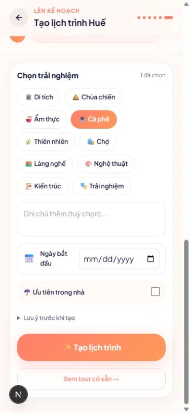
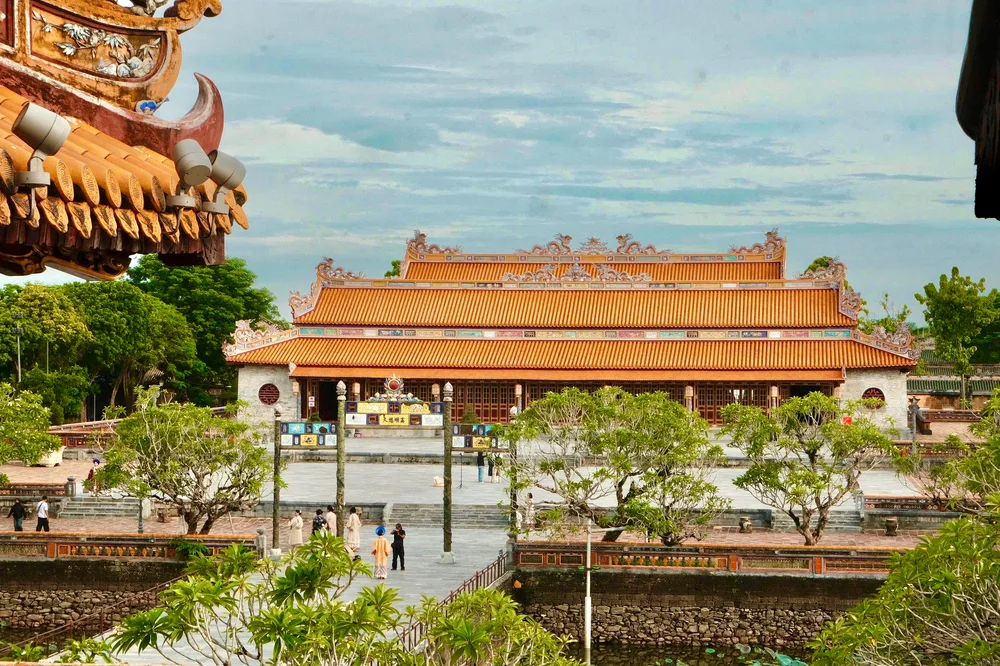
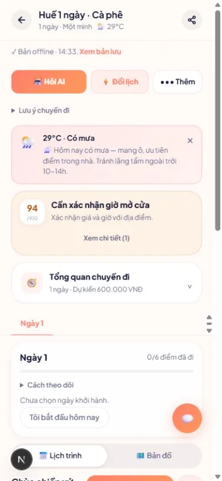
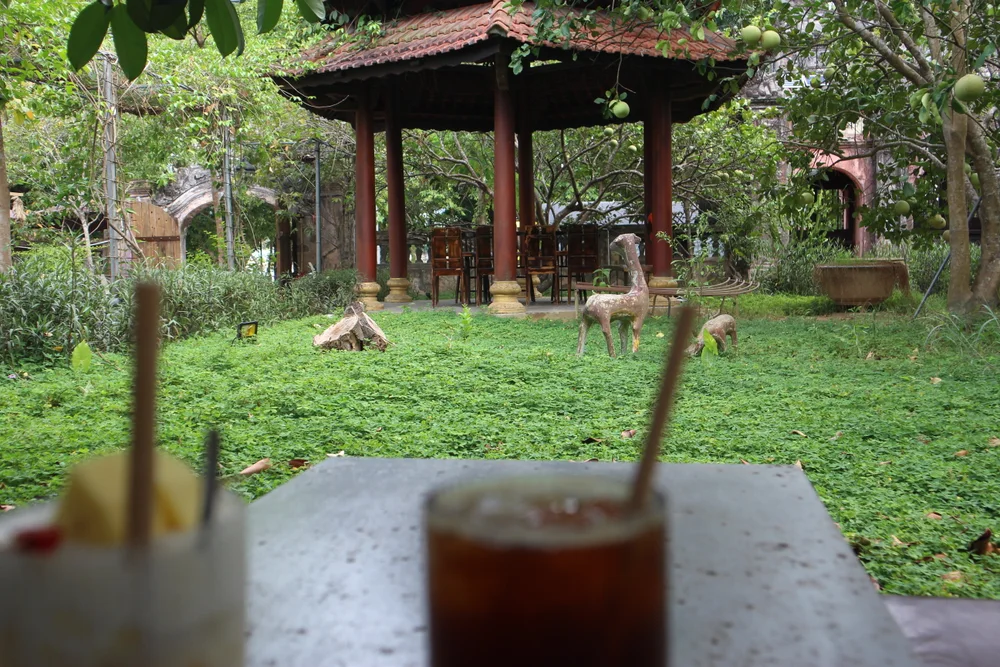

Kể câu chuyện
chuyến đi của bạn.
Thích ăn ngon, muốn yên tĩnh hay không muốn đi bộ nhiều? Bắt đầu từ sở thích, thời gian và nhịp đi để tạo một lịch trình phù hợp.
Sở thích cá nhânNhịp di chuyểnKhoảng nghỉ
Mở phần lên kế hoạch Một hành trình.
Mang nhịp riêng của bạn.
Từ điều bạn thích đến những thay đổi trên đường. HueViVu giúp bạn lên lịch, cân nhắc và dành tâm trí cho chuyến đi.
Trợ lý du lịch AI dành riêng cho Huế.
Lịch trình đẹp trên màn hình chưa chắc vừa với một ngày thực tế. Một cơn mưa, một lần trễ giờ hay một đôi chân đã mỏi đều có thể khiến chuyến đi lạc nhịp.
HueViVu bắt đầu từ điều đó.
Một người bạn biết đi cùng hoàn cảnh.
Một hành trình vừa với bạn.
Từ sở thích, di sản đến những thay đổi trên đường.



Thích ăn ngon, muốn yên tĩnh hay không muốn đi bộ nhiều? Bắt đầu từ sở thích, thời gian và nhịp đi để tạo một lịch trình phù hợp.
Xoay mô hình, nhìn những lớp mái và cảm nhận hình khối của công trình. Một cách làm quen với di sản trước khi gặp ngoài đời.
Một đoạn thuyết minh ngắn giúp bạn chú ý đến những chi tiết dễ bỏ qua. Nghe thử nội dung Ngọ Môn đang có trong bản tham quan của HueViVu.
Âm thanh chỉ phát khi bạn chọn nghe.
Mưa, mệt hoặc trễ giờ? Cân nhắc phương án mới trên phần lịch còn lại. Tiến độ đã đi được giữ lại, và bạn xem trước trước khi xác nhận.
Thử xem phương án đổi lịchMô hình và âm thanh từ bản tham quan của HueViVu.
Không tự tải 3D hay phát âm thanh khi bạn chưa chọn mở.
Chọn một tình huống và xem phần lịch còn lại thay đổi ra sao. Đây là ví dụ tương tác, không dùng dự báo hay lịch trình thật của bạn.

Đi Huế theo cách riêng của bạn.
Phần kế hoạch, mình cùng tính.
Kiểm tra giờ mở cửa, giá và điều kiện thực tế trước khi đi. AI hỗ trợ lựa chọn; bạn quyết định hành trình.